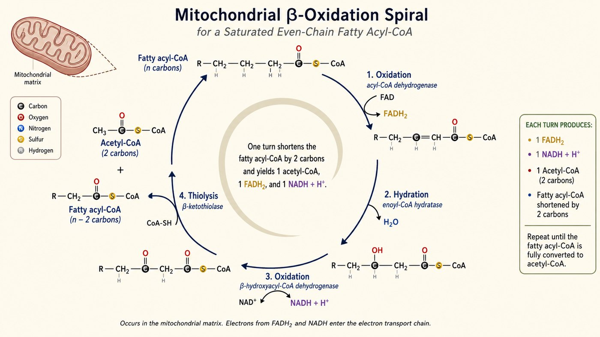
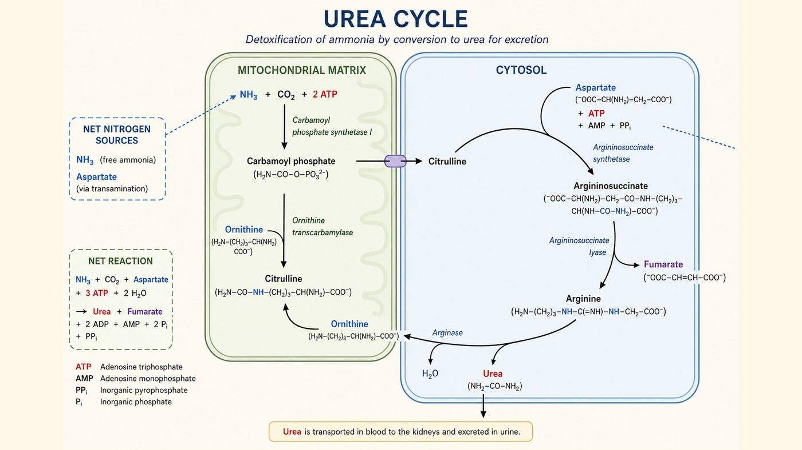

第 16 週
Chuyển hóa acid béo & amino acid
Không chỉ glucose
今天看脂肪和蛋白質。怎麼進發電線。
Từ vựng · 不用背,看過就好
| 中文 | Tiếng Việt | English | 中文 | Tiếng Việt | English |
|---|---|---|---|---|---|
| β-氧化 | β-Oxy hóa | Beta oxidation | 氨 | Ammonia | Ammonia |
| 肉鹼穿梭 | Thoi carnitine | Carnitine shuttle | 尿素 | Urea | Urea |
| 酮體 | Thể ceton | Ketone body | 尿素循環 | Chu trình urê | Urea cycle |
| 轉胺作用 | Sự chuyển amin | Transamination | 麩胺酸 | Glutamate | Glutamate |
| 去胺作用 | Sự khử amin | Deamination | 生酮胺基酸 | AA sinh ceton | Ketogenic |
β-oxy hóa

每圈:切 2 個碳,做出 1 乙醯CoA + 1 FADH₂ + 1 NADH。
7 vòng, không phải 8
這個 off-by-one 幾乎人人會錯。脂肪比同重量的糖產能多。
Thể ceton
太多 → 血液 pH 下降 → 酮酸中毒。這是第 2 週埋的伏筆(糖尿病)。
Thể ceton là acid → nhiễm toan ceton
Xử lý nitơ trước
把胺基搬走。
碳架去燒。
Chuyển amin
拿掉胺基。
放出氨(NH₃)。
Khử amin → NH₃
Chu trình urê

前兩步在粒線體。其餘在細胞質。氨 → 尿素 → 尿排出。
2 bước đầu ở ty thể, còn lại ở tế bào chất.
Ammonia → urea → thải qua nước tiểu.
3 nhiên liệu, 1 đường
| 燃料 | 怎麼進來 |
|---|---|
| 葡萄糖 | → 丙酮酸 → 乙醯CoA |
| 脂肪酸 | → β-氧化 → 乙醯CoA |
| 胺基酸 | → 去掉氮 → 乙醯CoA / 中間物 |
| 全部匯集 | 乙醯CoA → 循環 → 電子鏈 → ATP |
Toàn cảnh chuyển hóa
走同一條發電線。下週講身體怎麼決定燒哪個。 Cùng một đường dây. Tuần sau: cơ thể chọn đốt cái nào.
Bài tập: Tính
C16 脂肪酸做 β-氧化:
Acid béo C16 làm β-oxy hóa:
要幾圈?
Cần mấy vòng?
幾個乙醯CoA?
Mấy Acetyl-CoA?
Bài tập: Đúng hay sai
C16 脂肪酸做 β-氧化要 8 圈。
Acid béo C16 làm β-oxy hóa cần 8 vòng.
氨對身體有毒。
Ammonia độc với cơ thể.
尿素循環把氨變成尿素。
Chu trình ure biến ammonia thành urea.
脂肪酸和葡萄糖。都會變成乙醯CoA。
Acid béo và glucose đều thành Acetyl-CoA.
想一想:脂肪儲存能量。為何不全用肝醣?
下週 · Tuần sau
Tích hợp chuyển hóa
▶ 課前:看詞彙表第 17 週(20 個詞)
Xem trước 20 từ của tuần 17
▶ 小測:下週前 10 分鐘,考今天的詞
Kiểm tra 5 câu
▶ 提示:三種燃料學完了。下週看身體怎麼決定燒哪個
Gợi ý: cơ thể chọn đốt cái nào